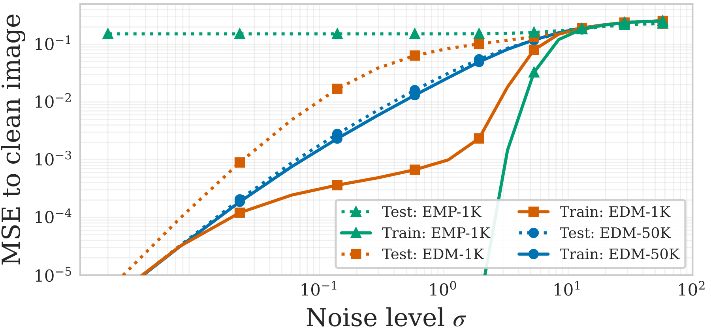

At large noise levels, generalizing and memorizing denoisers behave the same.
At moderate noise levels, a memorizing model performs differently on training data and test data.
Interestingly, at small noise levels a memorizing denoiser does not show a significant gap between training and test denoising.